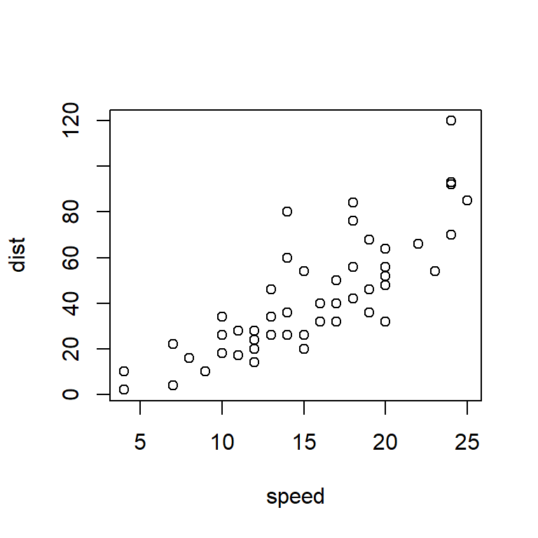
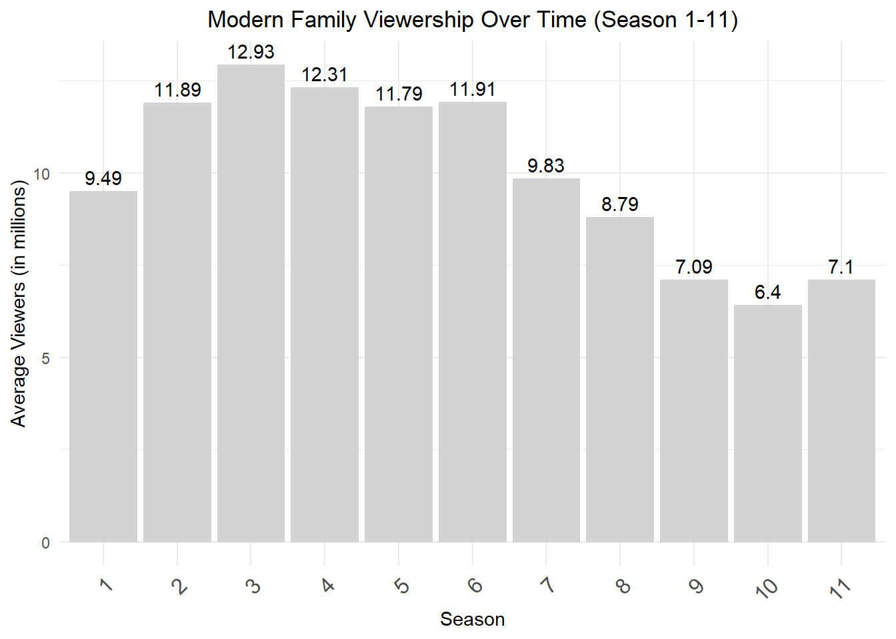
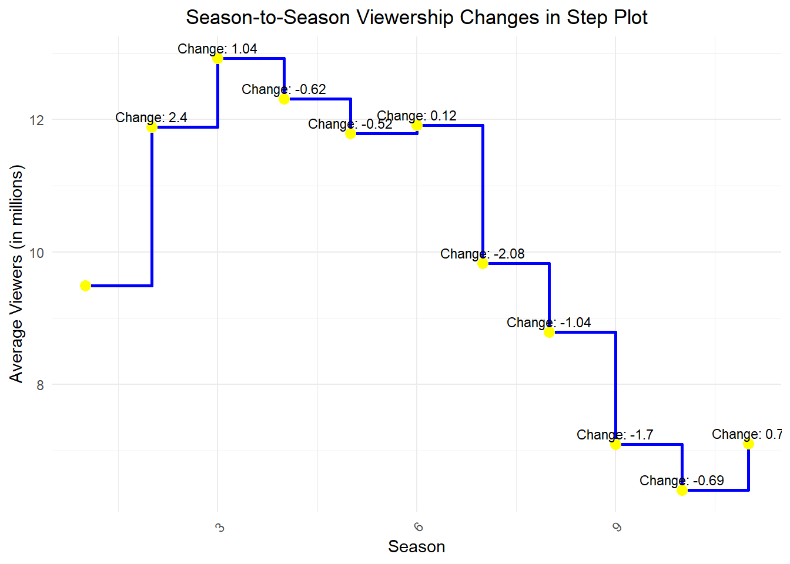

```{r}
cat("This is a code chunk")
```This is a code chunkAt the very top. Stores author and document information, configuration, global options, inputs, styles, format specifications, etc. This document uses:
--- title: "Quarto" author: "Wojciech Hardy" date: "4/11/2023" format: html execute: echo: fenced ---
The markup language, with easy and nice editing options.
Where the magic happens - codes whose output becomes a part of the document.
Let’s start with Markdown!
Consider the Source vs Visual mode and Rendering on Save options.
(this is how you do links in Markdown by the way)
[A Markdown cheatsheet](https://www.markdownguide.org/cheat-sheet/)
[A Quarto cheat sheet](https://res.cloudinary.com/dyd911kmh/image/upload/v1676540721/Marketing/Blog/Quarto_Cheat_Sheet.pdf)
Some basic text formatting includes *Italics* or _Italics_ (Italics) and **Bold** or __Bold__ (Bold) text. Bold
Some text sdajiodf
Some text
sdajiodf
Some text
sdajiodf
Superscripts can be done like so: R^2^ R2
Subscripts can be done like so: H~2~O H2O
# Header 1
## Header 2
### Header 3
#### Header 4
##### Header 5
1. Item 1
2. Item 2
2. Item 3 # Note the error in numbering
Item 1
Item 2
Item 3 # It's fine here though
* Item
* Another item
Item
Another item
1. Item 1
- Item 2
- Item 3
| Day | Hour | Group |
|---|---|---|
| Wednesday | 9:45 | 1 |
| Thursday | 16:45 | 2 |
| Thursday | 18:30 | 3 |
(this is a raw Markdown approach)
> Hmmm
Hmmm
- Geralt of Rivia
You can also just use html to write stuff within the Markdown document (when rendering into html). Here’s something copied and pasted directly from YAML Wikipedia page source code:
|
|
|
| Filename extensions |
.yaml, .yml
|
|---|---|
| Internet media type | Not registered |
| Initial release | 11 May 2001 |
| Latest release |
1.2 (Revision 1.2.2)
1 October 2021 |
| Type of format | Data interchange |
| Open format? | Yes |
| Website |
yaml |
You can insert equations with the same syntax as in LaTeX (MathJax). E.g. within a sentence $ \sum (x + 1) $ \(\sum (x + 1)\) or as standalone with double $$ at start and finish
\[\int_{-\infty}^{\infty}1/(b-a) dx\]
The main thing, however, is the ability to integrate coding within the document:
```{r}
cat("This is a code chunk")
```This is a code chunk(Also see running within the editor mode)
```{r}
summary(cars)
``` speed dist
Min. : 4.0 Min. : 2.00
1st Qu.:12.0 1st Qu.: 26.00
Median :15.0 Median : 36.00
Mean :15.4 Mean : 42.98
3rd Qu.:19.0 3rd Qu.: 56.00
Max. :25.0 Max. :120.00 ```{r}
plot(pressure)
```
You can also use Python in Quarto with Jupyter Notebook or even use it interchangeably with other languages:
```{python}
# import pandas
# flights = pandas.read_csv("../Data/flights.csv")
# flights = flights[flights['dest'] == "ORD"]
# flights = flights[['carrier', 'dep_delay', 'arr_delay']]
# flights = flights.dropna()
``````{r}
library(ggplot2)
# ggplot(py$flights, aes(carrier, arr_delay)) + geom_point() + geom_jitter()
#
# cat("Example from: https://rstudio.github.io/reticulate/articles/r_markdown.html")
```And a nice table alternative -> kable from the knitr package.
```{r}
knitr::kable(head(mtcars[, 1:4]), caption = "A kable table, ver 1")
```| mpg | cyl | disp | hp | |
|---|---|---|---|---|
| Mazda RX4 | 21.0 | 6 | 160 | 110 |
| Mazda RX4 Wag | 21.0 | 6 | 160 | 110 |
| Datsun 710 | 22.8 | 4 | 108 | 93 |
| Hornet 4 Drive | 21.4 | 6 | 258 | 110 |
| Hornet Sportabout | 18.7 | 8 | 360 | 175 |
| Valiant | 18.1 | 6 | 225 | 105 |
```{r}
knitr::kable(head(mtcars[, 1:4]), "html", caption = "A kable table, ver 2")
```| mpg | cyl | disp | hp | |
|---|---|---|---|---|
| Mazda RX4 | 21.0 | 6 | 160 | 110 |
| Mazda RX4 Wag | 21.0 | 6 | 160 | 110 |
| Datsun 710 | 22.8 | 4 | 108 | 93 |
| Hornet 4 Drive | 21.4 | 6 | 258 | 110 |
| Hornet Sportabout | 18.7 | 8 | 360 | 175 |
| Valiant | 18.1 | 6 | 225 | 105 |
```{r}
typical_width <- 4
typical_height <- 4
``````{r}
#| fig.width = typical_width,
#| fig.height = typical_height
plot(cars)
```
'r variable'We have previously set a typical width to ‘r typical_width’ and the typical height to ‘r typical_height’.
We have previously set a typical width to 4 and the typical height to 4.
```{r}
#| label: fig-cars
#| fig-cap: "City and highway mileage for 38 popular models of cars."
#| fig-alt: "Scatterplot of city vs. highway mileage for cars, where points are colored by the number of cylinders. The plot displays a positive, linear, and strong relationship between city and highway mileage, and mileage increases as the number of cylinders decreases."
#| fig-width: 6
#| fig-height: 3.5
ggplot(mpg, aes(x=hwy, y=cty, color=cyl)) +
geom_point(alpha = 0.5, size = 2) +
scale_color_viridis_c() +
theme_minimal()
```And you can refer to Figure 1 (@fig-cars) in-text!
You can also control the layout:
```{r}
#| label: fig-mpg
#| fig-cap: "City and highway mileage for 38 popular models of cars."
#| fig-subcap:
#| - "Color by number of cylinders"
#| - "Color by engine displacement, in liters"
#| layout-ncol: 2
#| column: page
ggplot(mpg, aes(x = hwy, y = cty, color = cyl)) +
geom_point(alpha = 0.5, size = 2) +
scale_color_viridis_c() +
theme_minimal()
ggplot(mpg, aes(x = hwy, y = cty, color = displ)) +
geom_point(alpha = 0.5, size = 2) +
scale_color_viridis_c(option = "E") +
theme_minimal()
```eval(is.weekend comes from the chron package)
```{r}
#| eval = is.weekend(Sys.Date())
cat("It's the weekend! :)")
``````{r}
#| eval = !is.weekend(Sys.Date())
cat("It's not the weekend! :(")
```It's not the weekend! :(```{r}
#| error = TRUE
543 + "clearly a text and not a number"
```Error in 543 + "clearly a text and not a number": non-numeric argument to binary operatorBy default Quarto stops after encountering an error. We can tell it to continue.
```{r}
x <- 15
``````{r}
#| label = "slow_chunk",
#| cache = TRUE
Sys.sleep(10)
a <- 5 + x
a
```[1] 20The chunk gets reevaluated if anything changes within the chunk. Make sure you know what you’re doing when caching.
We can use cache.extra = to specify additional conditions for cache invalidation (i.e. to repeat the calculations), e.g.:
file.mtime(‘filename’) # Modification time of the file changed
tools::md5sum(‘filename’) # Content of the file changed
getRversion() # R version changed
etc.
Other stuff:
cache-comments – if you don’t want to recalculate after changing a comment.
cache-lazy – loading with lazyload() instead of load() (see Lazy loading)
cache-vars – cache specified objects
dependson – reevaluate conditional on a change in a different chunk (or chunks)
autodep – will try to find the between-chunk dependencies on its own
echo=FALSE1+1[1] 2message=FALSE```{r}
#| message = FALSE
message("You will not see the message.")
```warning=FALSE```{r}
#| warning = FALSE
1:2 + 1:3
```[1] 2 4 4fig.show='hide'```{r}
#| fig.show = "hide"
plot(cars)
```include=FALSEresults='hide'```{r}
#| results = "hide"
a*typical_height*typical_width
```results='asis'```{r}
#| results = "asis"
for (i in 1:10) {
cat("- Item", i, "\n")
}
```(Note that it got interpreted as Markdown markup writing!)
Pick a TV show that had its premieres on TV and thus has some viewership numbers reported on Wikipedia.
Then create a short report (you can copy the content from Wikipedia or other pages for this task) that contains, for example:
(try doing more than one commit for this, i.e. divide your work into steps!)
```{r}
# Load the knitr package for table formatting
library(knitr)
# Create a data frame with Modern Family season info
df <- data.frame(
Season = 1:11, # Season numbers
Episodes = c(24, 24, 24, 24, 24, 24, 22, 22, 22, 22, 18), # Number of episodes per season
First_Released = c("September 23, 2009", "September 22, 2010", "September 21, 2011",
"September 26, 2012", "September 25, 2013", "September 24, 2014",
"September 23, 2015", "September 21, 2016", "September 27, 2017",
"September 26, 2018", "September 25, 2019"), # First air date
Last_Released = c("May 19, 2010", "May 25, 2011", "May 23, 2012", "May 22, 2013",
"May 21, 2014", "May 20, 2015", "May 18, 2016", "May 17, 2017",
"May 16, 2018", "May 8, 2019", "April 8, 2020"), # Last air date
Rank = c(36, 24, 15, 18, 19, 24, 36, 34, 58, 65, 48), # Nielsen rating rank
Average_Viewers = c(9.49, 11.89, 12.93, 12.31, 11.79, 11.91, 9.83, 8.79, 7.09, 6.40, 7.10) # Avg. viewers in millions
)
# Generate a basic table using kable
kable(df, caption = "Modern Family Season Overview", align = "c")
```| Season | Episodes | First_Released | Last_Released | Rank | Average_Viewers |
|---|---|---|---|---|---|
| 1 | 24 | September 23, 2009 | May 19, 2010 | 36 | 9.49 |
| 2 | 24 | September 22, 2010 | May 25, 2011 | 24 | 11.89 |
| 3 | 24 | September 21, 2011 | May 23, 2012 | 15 | 12.93 |
| 4 | 24 | September 26, 2012 | May 22, 2013 | 18 | 12.31 |
| 5 | 24 | September 25, 2013 | May 21, 2014 | 19 | 11.79 |
| 6 | 24 | September 24, 2014 | May 20, 2015 | 24 | 11.91 |
| 7 | 22 | September 23, 2015 | May 18, 2016 | 36 | 9.83 |
| 8 | 22 | September 21, 2016 | May 17, 2017 | 34 | 8.79 |
| 9 | 22 | September 27, 2017 | May 16, 2018 | 58 | 7.09 |
| 10 | 22 | September 26, 2018 | May 8, 2019 | 65 | 6.40 |
| 11 | 18 | September 25, 2019 | April 8, 2020 | 48 | 7.10 |
```{r}
# Load the necessary libraries
library(ggplot2)
# Create the bar plot of viewership over time
ggplot(df, aes(x = factor(Season), y = Average_Viewers)) +
geom_bar(stat = "identity", fill = "lightgray", color = "lightgray") +
geom_text(aes(label = Average_Viewers), color = "black", vjust = -0.5) +
labs(title = "Modern Family Viewership Over Time (Season 1-11)",
x = "Season",
y = "Average Viewers (in millions)") +
theme_minimal() +
theme(axis.text.x = element_text(angle = 45, hjust = 1, size = 12), # Merged both definitions
plot.title = element_text(hjust = 0.5))
```
```{r}
# Calculate the change in viewership between each season
df$Change_Viewers <- c(NA, diff(df$Average_Viewers))
# Create the step plot with annotations of the change between seasons
ggplot(df, aes(x = Season, y = Average_Viewers)) +
geom_step(color = "blue", size = 1) + # Step plot line with blue color
geom_point(color = "yellow", size = 3) + # Red points for each data point
geom_text(aes(label = ifelse(!is.na(Change_Viewers),
paste0("Change: ", round(Change_Viewers, 2)),
"")), # Label the change between seasons
color = "black", vjust = -0.5, size = 3) + # Adjust label position and size
labs(title = "Season-to-Season Viewership Changes in Step Plot", # Title
x = "Season", # X-axis label
y = "Average Viewers (in millions)") + # Y-axis label
theme_minimal() + # Use minimal theme for cleaner appearance
theme(axis.text.x = element_text(angle = 45, hjust = 1), # Rotate x-axis labels for readability
plot.title = element_text(hjust = 0.5)) # Center the plot title
```Warning: Using `size` aesthetic for lines was deprecated in ggplot2 3.4.0.
ℹ Please use `linewidth` instead.
insert_calculated_number between seasons 3 and 5).```{r}
# Introductory statement
intro <- "The viewership of Modern Family experienced significant changes across seasons."
# Generate a short description with inline references to viewership changes
paragraphs <- vector("list", length = 10)
# Loop through each season pair (1-2, 2-3, etc.)
for (i in 1:10) {
change_value <- df$Change_Viewers[i + 1] # Change in viewers between consecutive seasons
# Only proceed if the change value is valid (not NULL or NA)
if (!is.na(change_value)) {
direction <- ifelse(change_value > 0, "increased", "decreased")
paragraphs[[i]] <- paste(
"- The viewership", direction, "by", round(abs(change_value), 2), "million viewers between season", i, "and season", i + 1, "."
)
}
}
# Remove any NULL entries from the list (if any)
paragraphs <- paragraphs[!sapply(paragraphs, is.null)]
# Print the introductory statement followed by each paragraph with a newline for separation
cat(intro, "\n\n", paste(paragraphs, collapse = "\n\n"))
```The viewership of Modern Family experienced significant changes across seasons.
- The viewership increased by 2.4 million viewers between season 1 and season 2 .
- The viewership increased by 1.04 million viewers between season 2 and season 3 .
- The viewership decreased by 0.62 million viewers between season 3 and season 4 .
- The viewership decreased by 0.52 million viewers between season 4 and season 5 .
- The viewership increased by 0.12 million viewers between season 5 and season 6 .
- The viewership decreased by 2.08 million viewers between season 6 and season 7 .
- The viewership decreased by 1.04 million viewers between season 7 and season 8 .
- The viewership decreased by 1.7 million viewers between season 8 and season 9 .
- The viewership decreased by 0.69 million viewers between season 9 and season 10 .
- The viewership increased by 0.7 million viewers between season 10 and season 11 .render your report and save it in the relevant folder of your repo.